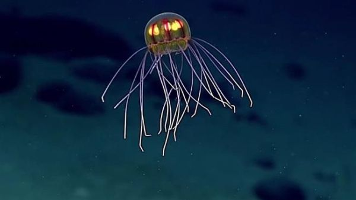

a very large expanse of sea, in particular, each of the main areas into which the sea is divided geographically.
An ocean is a body of saline water that composes much of a planet's hydrosphere. On Earth, an ocean is one of the major conventional divisions of the World Ocean. The word "ocean" is often used interchangeably with "sea" in American English. Strictly speaking, a sea is a body of saline water (generally a division of the world ocean) partly or fully enclosed by land, though "the sea" refers also to the oceans.
Saline water covers approximately 361,000,000 km2 and is customarily divided into several principal oceans and smaller seas, with the ocean covering approximately 71% of Earth's surface and 90% of the Earth's biosphere. The ocean contains 97% of Earth's water, and oceanographers have stated that less than 5% of the World Ocean has been explored. The total volume is approximately 1.35 billion cubic kilometers with an average depth of nearly 3,700 meters.
Extraterrestrial oceans may be composed of water or other elements and compounds. The only confirmed large stable bodies of extraterrestrial surface liquids are the lakes of Titan, although there is evidence for the existence of oceans elsewhere in the Solar System.
Early in their geologic histories, Mars and Venus are theorized to have had large water oceans. The Mars ocean hypothesis suggests that nearly a third of the surface of Mars was once covered by water, and a runaway greenhouse effect may have boiled away the global ocean of Venus. Compounds such as salts and ammonia dissolved in water lower its freezing point so that water might exist in large quantities in extraterrestrial environments as brine or convecting ice.
The word « ocean » comes from the figure in classical antiquity, Oceanus (/oʊˈsiːənəs/; Greek: Ὠκεανός Ōkeanós, the elder of the Titans in classical Greek mythology, believed by the ancient Greeks and Romans to be the divine personification of the sea, an enormous river encircling the world. The concept of Ōkeanós has an Indo-European connection. Greek Ōkeanós has been compared to the Vedic epithet ā-śáyāna-, predicated of the dragon Vṛtra-, who captured the cows/rivers. Related to this notion, the Okeanos is represented with a dragon-tail on some early Greek vases.
| Size Rank | Ocean | Location | Average Depth |
|---|---|---|---|
| 1 | Pacific | Separates Asia and Oceania from the Americas | 2.5 Miles |
| 2 | Atlantic | Separates the Americas from Europe and Africa | 2.3 Miles |
| 3 | Indian | Washes upon southern Asia and separates Africa and Australia | 2.3 Miles |
| 4 | Antarctic | Sometimes considered an extension of the Pacific, Atlantic and Indian Oceans, which encircles Antarctica | 2 Miles |
| 5 | Arctic | Covers much of the Arctic and washes upon northern North America and Eurasia. | .7 Miles |
The Pacific Ocean is the largest and deepest of Earth's oceanic divisions. It is located between Americas to the East of the Pacific Ocean basin and the Asian and Australian continents to the West. The Equator divides the Pacific Ocean into the North Pacific Ocean and the South Pacific Ocean. Its mean depth is 2.5 miles. The Mariana Trench in the western North Pacific is the deepest point in the world, reaching a depth of 6.7 miles. The word “Pacific” means peaceful.
It is the largest division of the World Ocean—and, in turn, the hydrosphere—covers about 46% of Earth's water surface and about one-third of its total surface area, making it larger than all of Earth's land area combined. The centers of both the Water Hemisphere and the Western Hemisphere are in the Pacific Ocean. The equator sub divides it into the North Pacific Ocean and South Pacific Ocean, with two exceptions: the Galápagos and Gilbert Islands, while straddling the equator, are deemed wholly within the South Pacific.
The Mariana Trench is located in the western Pacific Ocean (approximately 124 miles) east of the Mariana Islands, and has the deepest natural point in the world. It is a crescent-shaped trough in the Earth's crust averaging about 1,580 miles long and 43 miles wide. The maximum known depth is 36,070 feet!
This video shows just how deep the deepest part of the trench goes.
The Atlantic Ocean, slightly larger than half of the pacific, is the saltiest ocean in the world. The northernmost waters sink because they are colder, denser, and saltier than normal due to being cooled by Arctic currents; this creates what is known as “thermohaline circulation” or the “ocean conveyor belt.” It covers approximately 20 percent of the Earth's surface and about 29 percent of its water surface area. It separates the "Old World" from the "New World". As one component of the interconnected global ocean, it is connected in the north to the Arctic Ocean, to the Pacific Ocean in the southwest, the Indian Ocean in the southeast, and the Southern Ocean in the south.
I'm a homebody, as many writers are, and need to be by myself, and I like to be by the Atlantic Ocean.
This underwater mountain range is twice as wide as the Andes Mountain range.
The word ’Atlantic ’ originates from the Greek mythology meaning ‘Sea of Atlas’. Atlas was the titan who had to stand on the edge of the earth and carry the heavens on his shoulders as punishment from Zeus as Atlas had fought against the Olympian gods for the control of the heavens.
Located in the Atlantic, this triangular area is responsible for mysterious shipwrecks, aircraft crashes and other disappearances.
The Indian Ocean is the third largest, covering 70,560,000 km2 after the Atlantic and the Pacific Oceans. However, sometimes it is mentioned that the Diamantina Trench is the deepest part of this ocean, slightly deeper, about 8,047 meters. The highest level of salinity is in the Arabian Sea and along a belt of water.
The Indian Ocean is known as the warmest ocean in the world. Its rate of warming is also the fastest among the tropical oceans, further exacerbated by greenhouse warming and climate change. Its warmth makes the Indian Ocean not conducive to marine life compared to the other world oceans.
Despite the limited marine life, a huge concentration of phytoplankton can be found in the western part of the Indian Ocean, due to the yearly monsoon winds (especially around summer).
The Southern Ocean, also known as the Antarctic Ocean or the Austral Ocean, comprises the southernmost waters of the World Ocean, generally taken to be south of 60° S latitude and encircling Antarctica. As such, it is regarded as the fourth-largest of the five principal oceanic divisions: smaller than the Pacific, Atlantic, and Indian Oceans but larger than the Arctic Ocean. This ocean zone is where cold, northward flowing waters from the Antarctic mix with warmer subantarctic waters.
This ocean has the largest ocean current, called the Antarctic Circumpolar Current, and since it connects the Pacific, Atlantic, and Indian Ocean basins, it influences the climate of the entire planet. It takes 135-145 million cubic meters of water per second from west to east along 20,000 Antarctic kilometers at a speed of 0.5 meters per second. This current distributes heat and influences rainfall patterns and temperatures.
The Antarctic Ocean lies in the farthest edge of the Southern Hemisphere, and is consequently severely impacted by the sun’s seasonal influence. In particular, during the colder months, when the sun is not shining directly on the ocean, the ice packs melt to an average low of 2.6 million square kilometers. When the sun moves away from the ocean, the ice packs rebuild.
The Arctic Ocean's surface temperature is fairly constant, near the freezing point of seawater. Because of the Arctic Ocean's low evaporation, large freshwater inflow, and its limited connection to other oceans it has the lowest salinity of all oceans.
The Arctic Ocean’s salinity is the lowest on average of the five major oceans, due to low evaporation, heavy fresh water inflow from rivers and streams, and limited connection and outflow to surrounding oceanic waters with higher salinities.
Icebergs and ice packs are found in the Arctic during any season, but the oceans surface will be covered by ice during June to October. Due to climate change and global warming the ice packs melt in spring and summer and re-freeze in the colder autumn and winter.
The Arctic Ocean is unique. It is the most extreme ocean in regard to the seasonality of light and its year-round existing ice cover. Knowledge of what lives in the Arctic Ocean is limited due to the logistical challenges imposed by its multiyear ice and inhospitable climate.